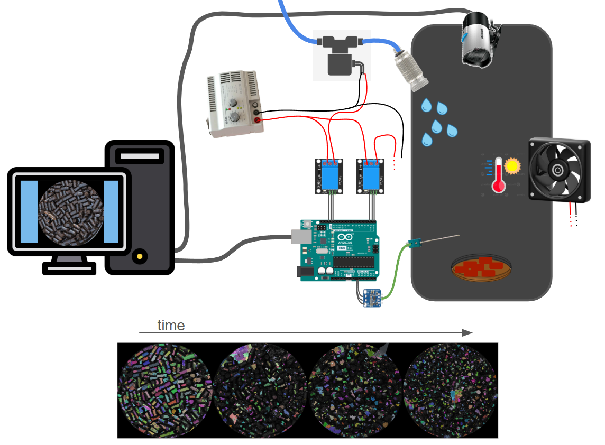

Starting my career at the Laboratory of the Future (LoF) - Syensqo (2009 - Bordeaux, France) as a laboratory technician in chemistry and formualtion, I quickly trained myself in programming with Matlab.
I then became fascinated by the power of programming, starting with basic tasks like processing spectrometer data and moving on to more advanced techniques like building machine learning models for image classification. I rapidly understood that to fully manage the data lifecycle in an R&D environment, programming skills are key.
Given the LoF's focus on miniaturizing and automating lab processes, I joined a newly created team in 2014 to build and develop highly customized automated laboratory systems.
While transitioning to Python (which has since become a standard thanks to AI) and by building these systems, I acquired skills in the following areas:
- Image analysis
- Signal processing
- Lab equipment instrumentation (cameras, pHmeters, syringe-pumps, viscometer, Peltier modules, flowmeters, spectrometers and much more)
- User interface
- Data visualization
- Electronic boards (Arduino / Raspberry Pi)
- CAD (SolidWorks, Open-scad, Freecad) & 3D printing (Raise3D, UltiMaker)
From simple ageing setups (that mimic weather) with advanced image analysis caracterisation...


Being very curious about cutting-edge algorithmic technologies, in 2018 I joined the data scientist team of the group for a part of my time, and I started working on data science topics since :
- Web scraping
- Machine learning / Deep Learning
- AI assited imagery analysis
- Bayesian optimization
- Intrinsic curiosity algorithms
- Agentic AI assistant (RAG, GraphRAG, LangChain, LLM Knowledge Bases, ...)
I have examples on every items of this list, but here are two of them:
As a first example, in 2023, I built an intelligent shampoo formulation platform (Self-Driving Labs), with autonomous decision-making through Bayesian optimization, showing the effectiveness of these algorithms compared to a classic approach of experimental design (DOE) and human reasoning.
We have shown that when working with tertiaries (3 products in the same formulation), the Bayesian optimization approach allowed us to discover 5 times more good candidates in 3 times fewer created formulations.


As a second example, in 2019, I built a chemoinformatic tool for predicting the optimal salinity of surfactant mixtures in the field of oil recovery (EOR). Designed with TensorFlow, combining a CNN and NN, deployed on Dataiku.

I successfully led and delivered numerous data-driven projects, leveraging my expertise to build full package projects, from data acquisition and analysis to visualization and UI with tools like Dash Plotly mostly.
I like to share my knowledge of the professions of robotics mechatronics engineer and data scientist and I have participated, as a Python trainer, in several trainings throughout my career.
In addition to my professional experience, I have continued to learn and grow by undertaking personal Python projects:
Your next cycling adventure, Bayesian-optimized
 Article - 2021 Using geospatial data and Bayesian optimization. Google Colab code |
AI-powered video editing with music rhythm matching
Article - 2021 Using music information retrieval (MIR) and MoviePy Google Colab code |
Free (Open sourced) Print and Play (PnP) deck building card game
Webpage - 2025 Using local LLM & Wan2.2 to generate 7500+ illustrations Github |